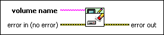

EWF Clear Command VI
Owning Palette: Enhanced Write Filter VIs
Requires: Application Builder or Professional System
Clears the pending command that you set since you last restarted the operating system. This VI clears commands set by the following VIs: EWF Checkpoint VI, EWF Commit Volume VI, EWF Protect Volume VI, and EWF Restore VI. The volume must be enabled for enhanced write filter (EWF).
For example, if you use the EWF Checkpoint VI to create a new checkpoint on a volume, a command to create the checkpoint is set to execute when you restart the operating system. You can clear the command by running the EWF Clear Command VI.
 Add to the block diagram Add to the block diagram |
 Find on the palette Find on the palette |